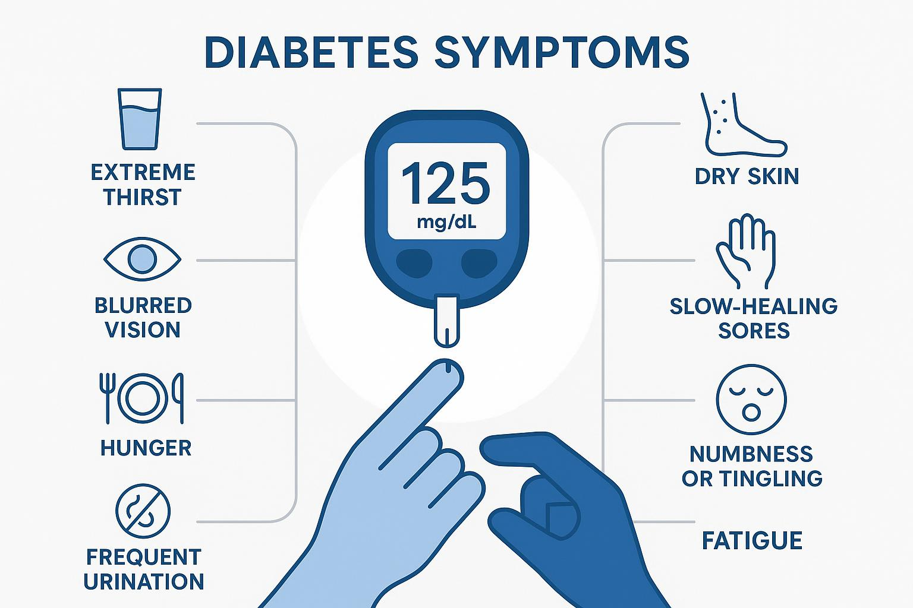

Diabetes
10 Sinais de Diabetes que Você Não Pode Ignorar
Descubra os principais sintomas do diabetes que muitas vezes passam despercebidos. Reconhecer estes sinais precocemente pode fazer toda a diferença no tratamento.